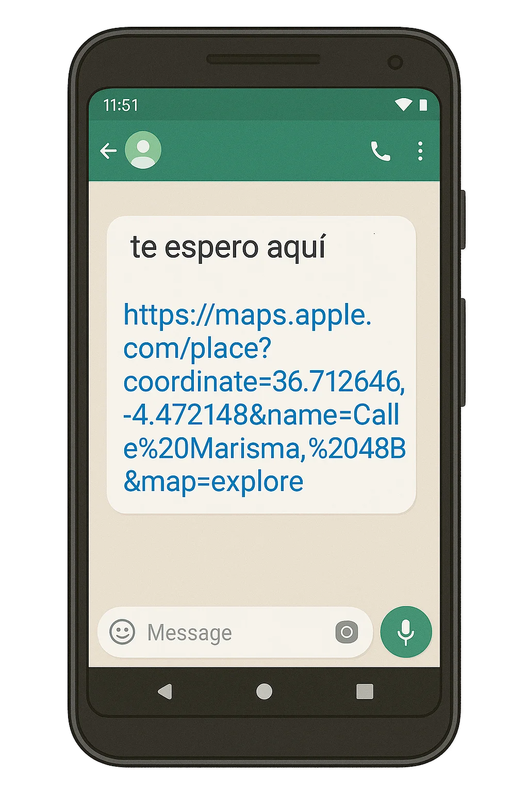
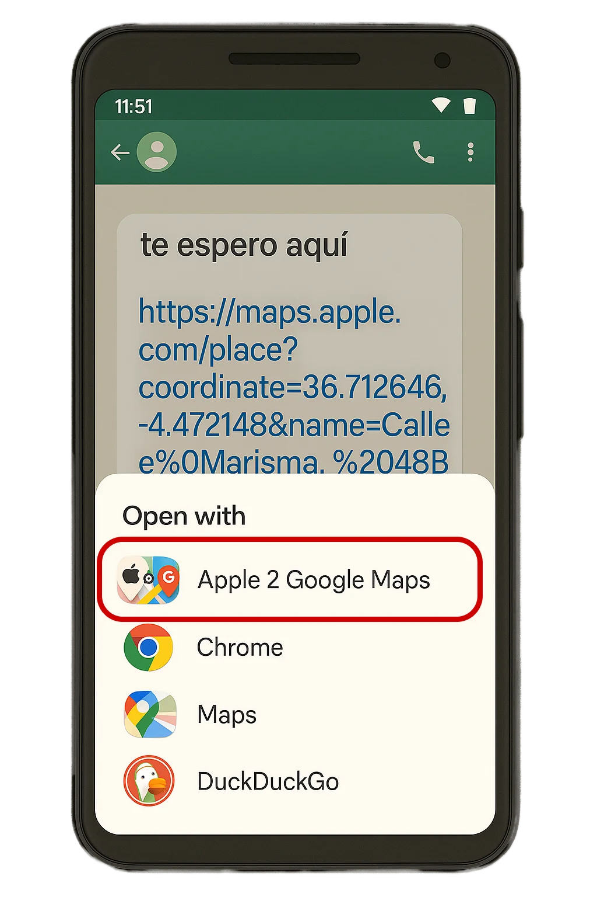
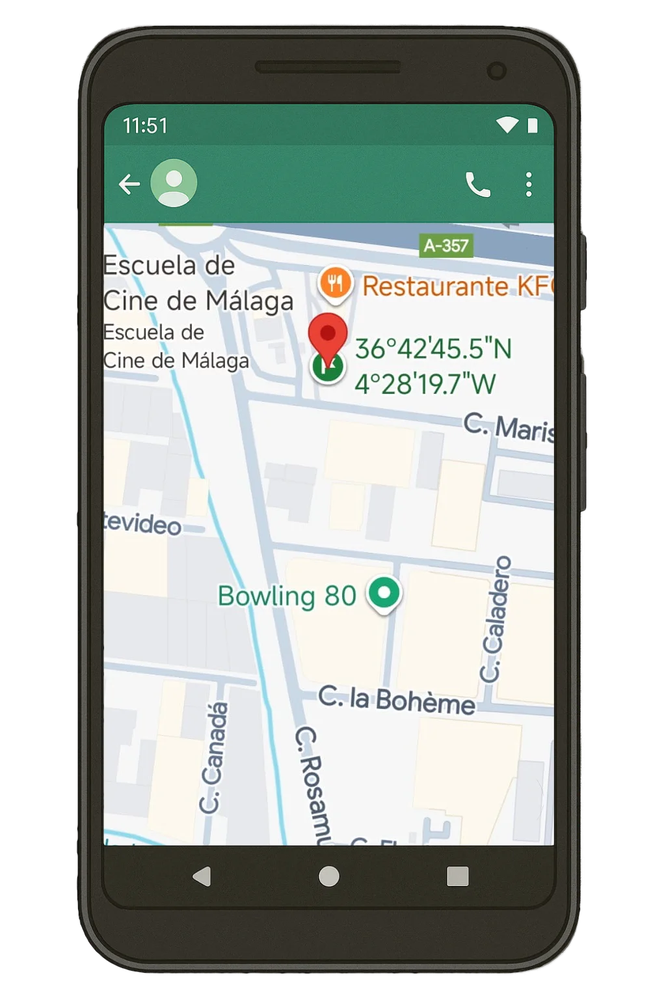

¿Cansado de que los enlaces de Apple Maps no funcionen bien en Android?
Apple 2 Google Maps Converter soluciona este problema de una vez por todas.
Descargar Ahora¿Por qué necesitas A2GMC?
Enlaces rotos
Los enlaces de Apple Maps no funcionan correctamente en dispositivos Android, llevándote a páginas web en lugar de a la aplicación de mapas.
Pérdida de tiempo
Copiar coordenadas manualmente o buscar de nuevo la ubicación es tedioso y consume tiempo valioso.
Navegación directa
Con A2GMC, cualquier enlace de Apple Maps se abrirá automáticamente en Google Maps, listo para navegar.
¿Cómo funciona?
1
Recibe un enlace de Apple Maps
2
Compártelo con A2GMC o ábrelo directamente
3
¡Listo! Se abrirá en Google Maps automáticamente
Descarga la aplicación
Disponible en Google Play Store para todos los dispositivos Android
Compatible con Android 6.0 y versiones posteriores